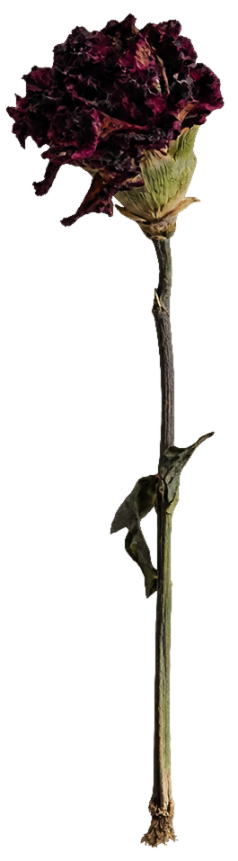
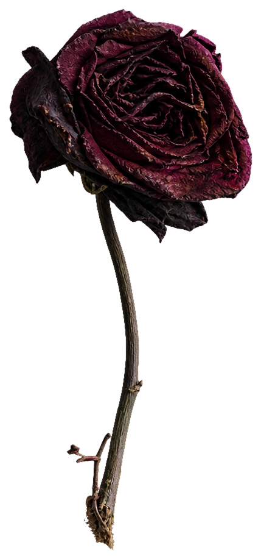

calor demais faz queimar
Arraste o sol sobre uma flor morta para fazê-la viver. Se o sol for usado três vezes sobre uma flor viva, ela morre. O fósforo mata uma flor viva e transforma uma flor morta em cinzas.


Arraste o sol sobre uma flor morta para fazê-la viver. Se o sol for usado três vezes sobre uma flor viva, ela morre. O fósforo mata uma flor viva e transforma uma flor morta em cinzas.

